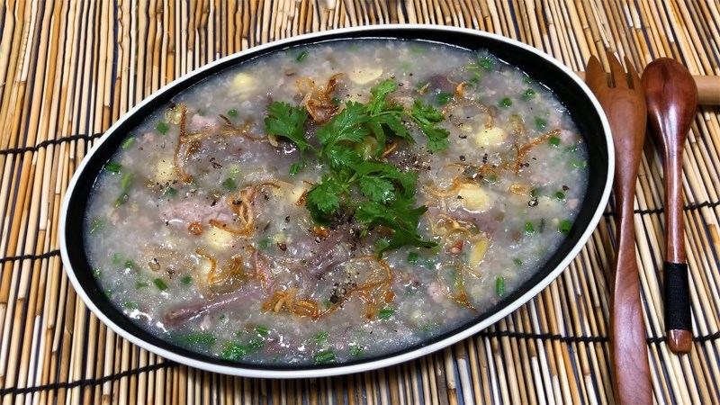
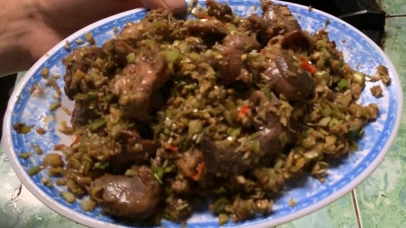
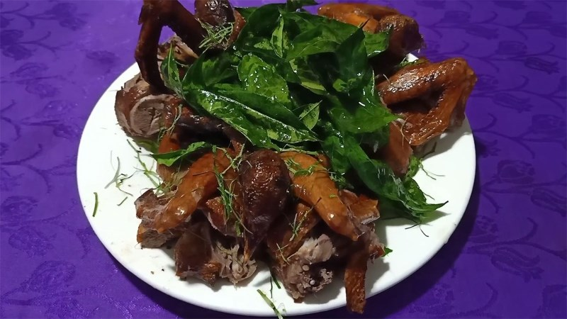
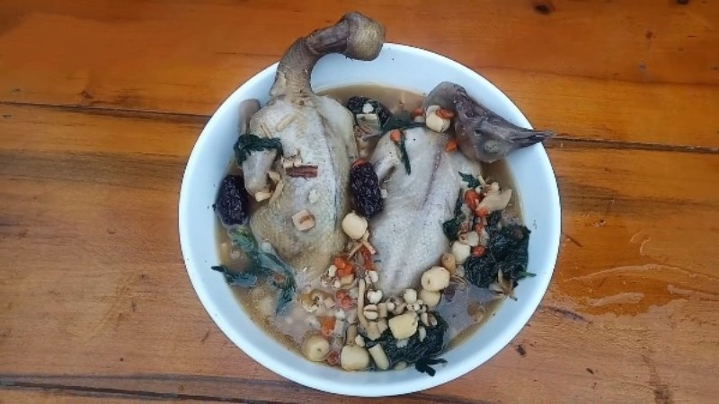
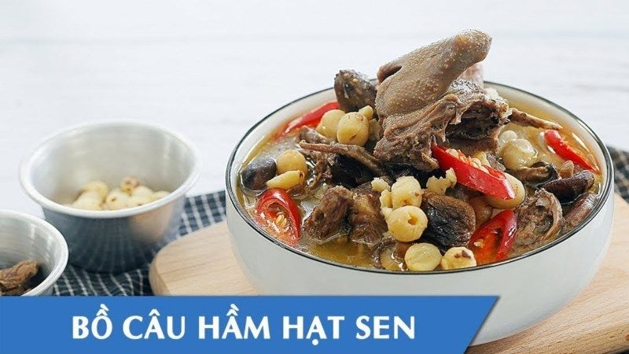
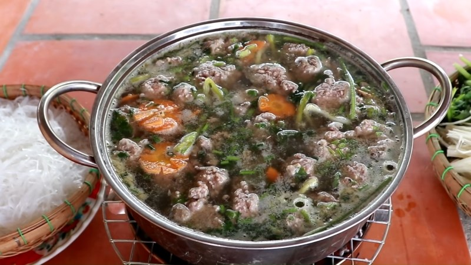
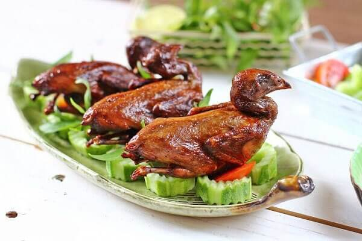

Bồ câu đã có mặt trong cuộc sống của con người từ thời cổ đại. Chúng được nuôi để cung cấp thịt, trứng và thậm chí là lông để làm lông, gày trong nghệ thuật và công nghiệp. Trong lịch sử, bồ câu đã đóng vai trò quan trọng trong việc truyền tải tin tức và thư tín. Trên thế giới, chúng được coi là biểu tượng của sự yên bình, sự hoà bình và tình yêu.
Bồ câu thuộc họ Columbidae trong bộ Columbiformes. Chúng thường có kích thước nhỏ đến trung bình, với bộ lông mềm mại và đôi cánh mảnh mai. Bồ câu thường sống trong các khu đô thị và nông thôn, nơi chúng tìm kiếm thức ăn và xây tổ. Chúng cũng được biết đến với khả năng lập gia đình mạnh mẽ và sự trung thành với đối tác của mình.
Trong nhiều văn hóa, bồ câu được coi là biểu tượng của tình yêu và hòa bình. Trong Kinh Thánh, bồ câu được đặt biểu tượng cho Linh Thánh và sự thanh tịnh. Trong nghệ thuật và văn hóa dân gian, chúng thường xuất hiện như biểu tượng của sự tự do và hạnh phúc.
Trong tất cả các phương diện của cuộc sống, bồ câu luôn có một vị trí đặc biệt trong lòng con người. Từ ý nghĩa lịch sử và văn hóa đến những đặc điểm sinh học độc đáo của chúng, bồ câu là một phần không thể tách rời của thế giới tự nhiên và văn hóa con người.
Xin cảm ơn mọi người đã đọc !
Thịt chim bồ câu chứa đựng một loạt các chất dinh dưỡng đa dạng, bao gồm protein, axit amin, vitamin B, B2, E, chondroitin, choline và nhiều nguyên tố vi lượng khác, .
là thành phần quan trọng giúp cung cấp máu hiệu quả cho cơ thể. Có thể nói rằng, giá trị dinh dưỡng của thịt bồ câu còn cao hơn cả thịt bò và thịt gà. Quan trọng hơn nữa, hàm lượng protein trong thịt bồ câu rất cao, chiếm đến khoảng 24,5%, gấp đến 9 lần so với thịt gà. Đồng thời, hàm lượng chất béo và cholesterol lại rất thấp so với các loại thịt động vật khác, chỉ chiếm khoảng 0,3%
Mặc dù nhỏ bé nhưng thịt bồ câu chứa đựng một lượng dưỡng chất phong phú. Trong y học, nó được coi là một loại thuốc quý mang lại nhiều lợi ích cho sức khỏe như:
Nói đến chim bồ câu không thể không nhắc đến những công dụng hữu hiệu như tốt cho não bộ và thần kinh. Vì vậy, khi được nấu thành cháo dường như giá trị dinh dưỡng của nó tăng lên gấp nhiều lần.
Cháo bồ câu nóng hổi tạo cảm giác đầu tiên là muốn thưởng thức ngay. Cháo sánh mịn với thịt chim mềm, ngọt từng thớ thịt, thêm chút hương vị của hành ngò, hành lá khiến bạn không thể cưỡng lại được.
Món ăn sẽ càng hoàn hảo hơn khi dùng nóng và rắc thêm một ít tiêu xay. Hãy thử nó ngay bây giờ, bạn sẽ không hối tiếc.
Nếu bạn là người thích ăn cay thì không nên bỏ qua món chim bồ câu chiên sả ớt này nhé. Với công thức cực kỳ đơn giản và nhanh chóng, bạn đã có ngay một món ăn hấp dẫn để mang đến bữa cơm gia đình.
Thịt bồ câu mềm, ngọt mà đầy hương vị, kết hợp với vị sả ớt cay cay nơi đầu lưỡi thật say đắm. Món chim bồ câu chiên xù này rất phù hợp để ăn cùng với cơm trắng nghi ngút khói hay chỉ đơn giản là món ăn vặt. Nó sẽ rất độc đáo.
Bạn đã từng nghe đến món chim bồ câu quay chưa? Nếu chưa thì phải xem ngay để làm vì đây là món ăn vô cùng đặc biệt mà ngay cả người kén ăn nhất cũng phải khen ngợi không ngớt.
Bồ câu quay trước tiên được nướng chín để thịt chim mềm và thấm đều gia vị hơn, sau đó đem chiên để lớp da giòn và thơm ngon. Chỉ nghe thôi cũng thấy sức hấp dẫn của món ăn lớn đến mức nào.
Món này ăn với ít lá mắc mật và chiên lên càng ngon. Hãy thử ngay bây giờ.
Sau một ngày làm việc mệt mỏi, được trở về ngôi nhà thân yêu và có cơm ăn thì còn gì bằng. Với thịt chim bồ câu, ngoài tác dụng cải thiện trí nhớ, nó còn có thể duy trì và kéo dài tuổi thọ rất nhiều. Vì vậy, món bồ câu hầm thuốc bắc ra đời nhằm giữ nguyên đầy đủ các chất dinh dưỡng cần thiết cung cấp cho cơ thể mà còn là món ăn hoàn hảo cho mỗi bữa ăn.
Thịt chim nấu chín cực mềm và không bị dai. Hơn nữa, các loại rau thơm được nấu cùng nhau tạo nên nước dùng rất ấn tượng và bổ dưỡng không thua gì các món hảo hạng khác. Sẽ ngon hơn khi dùng ấm và thích hợp khi cơ thể đang cảm thấy suy nhược hoặc vừa để bồi bổ.
Hạt sen được biết đến nhiều nhất là loại hạt có tác dụng rất tốt trong việc điều trị chứng mất ngủ, ngoài ra nó còn có công dụng an thần, chữa chướng bụng và nhiều công dụng khác. Thoạt nhìn đã thấy bổ dưỡng nhưng khi kết hợp với thịt chim thì quả là hấp dẫn hơn.
Món bồ câu nấu hạt sen có vị ngọt tự nhiên và vô cùng tươi ngon. Hạt sen còn bùi bùi, béo ngậy quyện với thịt chim chắc, ngọt. Hãy làm món này để cả nhà cùng quây quần nhé, rất đáng để thử đấy!
Lẩu luôn là lựa chọn hàng đầu trong những buổi tụ họp của các thành viên trong gia đình hay bạn bè. Nghe đến đây bạn sẽ nghĩ ngay đến lẩu Thái, lẩu cá,… vậy hôm nay hãy cùng điểm qua một món lẩu mới toanh nhưng hương vị thì rất đáng nhớ. Đó là một nồi chim bồ câu.
Món lẩu này được nấu bằng thịt chim, tất nhiên nước dùng có vị ngọt rất tự nhiên. Ngoài ra, thịt chim ăn kèm với các loại rau củ khác như mướp đắng, cà rốt,… không thua kém gì các món ăn nóng hổi khác phải không nào?
Bồ Câu chiên Giòn là món ăn mà bạn không thể cưởng lại với lớp da giòn rụm ở trong mềm và mộng nước nghe thôi cũng đã chảy nước miếng rồi !
đây là món ăn vừa bổ dưỡng mà vừa ngon thích hợp cho đám tiệt
